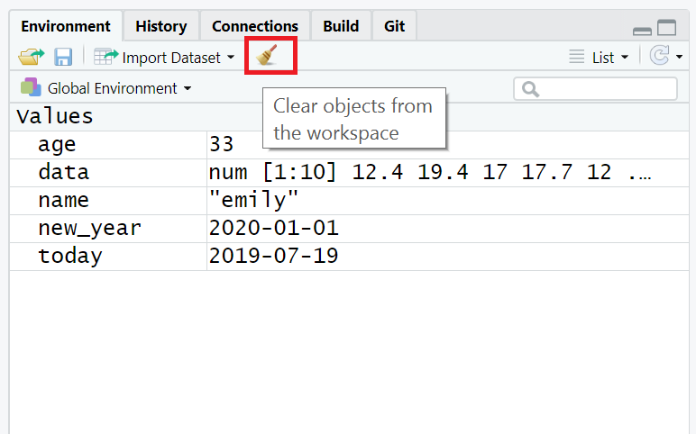

?rnormFonksiyonlar
Fonksiyon belli bir görevi yerine getirmek için yazılan bir grup komuttur.
Fonksiyonların çalışması için girdilerinin olması gerekmektedir. Fonksiyonlar girdileri ile yaptıkları işlem sonucunda bir çıktı oluştururlar.
Fonksiyonlar girdileri o fonksiyonun çalışması için önceden belirlenen argümanlar ve o argümanların değerlerinden oluşur. (dilbilimle ilgileniyorsanız, bunları bir özne ve nesne gerektiren fiiller olarak düşünmek isteyebilirsiniz)
Fonksiyonların kullanımında üç noktaya dikkat edilmelidir.
- argümanların sırası
- argümanların olağan (default) değerleri
- bazı argümanların zorunlu, bazı argümanların opsiyonel olmasıdır
Bir fonksiyonun aldığı tüm argümanlara yardım dokümantasyonunu kullanarak
?functionformatını kullanarak bakabilirsiniz. Bazı argümanlar zorunlu, bazıları ise isteğe bağlıdır. İsteğe bağlı bağımsız değişkenler, herhangi bir değer girmezseniz genellikle varsayılan/olağan (normalde yardım belgelerinde belirtilen) bir değer kullanır.Örnek olarak, normal dağılıma sahip bir sayı kümesini rastgele üreten
rnorm()fonksiyonunun yardım belgelerine bakalım.Bir fonksiyonun aldığı tüm argümanlara yardım dokümantasyonunu kullanarak
?functionformatını kullanarak bakabilirsiniz. Bazı argümanlar zorunlu, bazıları ise isteğe bağlıdır. İsteğe bağlı bağımsız değişkenler, herhangi bir değer girmezseniz genellikle varsayılan/olağan (normalde yardım belgelerinde belirtilen) bir değer kullanır.
Alıştırma
- R Studio’yu açın ve konsola aşağıdaki kodu yazın:
rnorm()için yardım belgeleri sağ alt yardım panelinde görünmelidir. Kullanım bölümünde,rnorm()un aşağıdaki formu aldığını görüyoruz:
rnorm(n, mean = 0, sd = 1)Argümanlar bölümünde, her bir argüman için açıklamalar bulunmaktadır.
noluşturmak istediğimiz gözlem sayısı,meanoluşturacağımız veri noktalarının ortalaması vesdverinin standart sapmasıdır. Ayrıntılar bölümünde,meanvesdiçin herhangi bir değer girilmezse, bu değerler için varsayılan olarak 0 ve 1 kullanılacağı belirtilir.niçin varsayılan bir değer olmadığından, belirtilmesi gerekir, aksi takdirde kod çalışmaz.Bir örnek deneyelim ve R’den 5 rastgele sayı üretmesini istemek için gerekli
nargümanını değiştirelim.
Alıştırma II
- Aşağıdaki kodu kopyalayıp konsola yapıştırın.
set.seed(12042016)
rnorm(n = 5)[1] -0.2896163 -0.6428964 0.5829221 -0.3286728 -0.5110101- Bu sayıların ortalaması 0 ve SD’si 1’dir. Şimdi farklı bir sayı kümesi üretmek için ek argümanları değiştirebiliriz.
rnorm(n = 5, mean = 10, sd = 2)[1] 13.320853 9.377956 10.235461 9.811793 13.019102- Bu kez R yine 5 rastgele sayı üretti, ancak şimdi bu sayı kümesi belirtildiği gibi 10 ortalama ve 2 sd değerine sahip. Bir fonksiyonun hangi argümanları gerektirdiğini anlamanıza yardımcı olması için yardım belgelerini kullanmayı her zaman unutmayın.
Eğer internette kod örneklerine bakıyorsanız, sık sık set.seed() fonksiyonu ile başlayan kodlar görebilirsiniz. Bu fonksiyon rastgele sayı üretecini kontrol eder - rastgele sayı üreten herhangi bir fonksiyon kullanıyorsanız (rnorm() gibi), set.seed() fonksiyonunu çalıştırmak aynı sonucu almanızı sağlayacaktır (bazı durumlarda yapmak istediğiniz şey bu olmayabilir). Bu örnekte set.seed() diyoruz, bu aynı rastgele sayıları alacağınız anlamına geliyor.
Argüman isimleri
- Yukarıdaki örneklerde, kodumuzdaki bağımsız değişken adlarını yazdık (örneğin,
n,mean,sd), ancak bu kesinlikle gerekli değildir. Aşağıdaki iki kod satırının her ikisi de aynı sonucu üretecektir (rnorm()fonksiyonunu her çalıştırdığınızda rastgele olduğu için biraz farklı bir sayı kümesi üretecektir, ancak yine de aynı ortalama ve SD’ye sahip olacaklardır):
rnorm(n = 6, mean = 3, sd = 1)
rnorm(6, 3, 1)Önemli olarak, eğer argüman isimlerini yazmazsanız, R argümanların varsayılan sırasını kullanacaktır, yani
rnormiçin girdiğiniz ilk sayınınnolduğunu varsayacaktır. ikinci sayımeanve üçüncü sayısddir.Eğer argüman isimlerini yazarsanız, argümanları istediğiniz sırada yazabilirsiniz:
rnorm(sd = 1, n = 6, mean = 3)R’yi ilk öğrenirken, fonksiyonun her bir parçasının ne yaptığını hatırlamanıza ve anlamanıza yardımcı olabileceğinden, argüman adlarını yazmayı yararlı bulabilirsiniz. Ancak, becerileriniz ilerledikçe argüman adlarını atlamayı daha hızlı bulabilirsiniz ve ayrıca argüman adlarını kullanmayan çevrimiçi kod örnekleri göreceksiniz, bu nedenle her bir kod parçasının hangi argümana atıfta bulunduğunu anlayabilmek önemlidir (veya kontrol etmek için yardım belgelerine bakın).
Bu derste, her bir fonksiyonu ilk kez kullandığımızda argüman adlarını her zaman yazacağız, ancak sonraki kullanımlarda bunlar atlanabilir.
TAB ile otomatik tamamlama
- R Studio’nun çok kullanışlı bir özelliği, fonksiyonlar için TAB otomatik tamamlama özelliğidir (bkz. Şekil @ref(fig:img-autocomplete)). Fonksiyonun adını yazıp tab tuşuna basarsanız, R Studio size fonksiyonun aldığı argümanları kısa bir açıklama ile birlikte gösterecektir. Argüman adının üzerinde enter tuşuna basarsanız, tıpkı telefonunuzdaki otomatik tamamlama gibi adı sizin için dolduracaktır. Bu, R’yi ilk öğrenirken inanılmaz derecede kullanışlıdır ve bu özelliği sık sık kullanmayı unutmamalısınız.

Kişisel tanımlı fonksiyon
- Kişisel tanımlı fonksiyon yazılması şablonu aşağıdaki gibidir.
fonksiyonadi<- function(argumanlar ve olagan degerleri){
kodlar
return()
}- Oluşturulan fonksiyon çalıştırılırken ise aşağıdaki şeklinde çalıştırılır.
fonksiyonadi(argumanlar ve degerleri)- Kare alma işlemi aşağıdaki şekilde yapılabilir.
sayi <- 4
sayi * sayi[1] 16sayi ^2[1] 16- Bu işlem sürekli yapılacaksa fonksiyon olarak yazılabilir.
# kare alma fonksiyonu
kare_al <- function(sayi){
return(sayi*sayi)
}
kare_al(4)[1] 16- Farklı dereceden üsler alabilen bir fonksiyon yazalım.
#üs alma
üs_al<- function(x,us){
return(x^us)
}
üs_al(3,4)[1] 81- Argümanlardan birine olağan değer girilmesi
#üs alma
üs_al<- function(x,us=2){
return(x^us)
}
üs_al(3) # us argumanin olagan degeri olan[1] 9# 2 olduğu için argumana
# deger girilmediginde kare alir.- Aşağıdaki fonksiyona 3 ve 4 değerleri girilirse çıktı ne olur?
myfunc <- function(x,y)
{
a <- x+y
b <- x* y
return(a*b)
}
myfunc(3,4)mean()fonksiyonu en sık kullandığımız fonksiyonlardan biridir.
x <- c(1,2,3)
mean(x)[1] 2R base pakette yer alan bu fonksiyonu kendiniz de yazabilirsiniz.
R’ da deneyim kazandıkça, yaptığınız işlemler karmaşıklaştıkça kendi fonksiyonlarınızı yazma ihtiyacı duyacaksınız.
avg()isminde vektör ortalaması hesaplayan fonksiyon yazınız.
- Yazdığınız fonksiyon ile aşağıdaki işlemi yapınız.
Code
x <- 1:1000
avg(x)[1] 500.5- Yazdığınız fonksiyon temel pakette yer alan
mean()fonksiyonu ile aynı sonucu verdi mi?
identical(avg(x),mean(x))[1] TRUEFonksiyon içinde tanımlanan nesneler çalışma alanına kaydedilmezler.
Fonksiyonlar da R nesnesidir.
ls()[1] "avg" "kare_al" "sayi" "üs_al" "x" R Çalışma Alanı
çalışma alanı, nesnelerin ve bilgilerin kaydedildiği alandır.
ls()veobjects()fonksiyonları çalışma alanında kayıtlı nesneleri konsolda göstermektedir.ls()fonksiyonu ile nesneleri çağırma işlemi özelleştirilebilir.ls.str()fonksiyonu ise hafızadaki nesneleri ayrıntıları ile göstermektedir.Çok fazla kod yazıyorsanız, enviroment (veya çalışma alanının) birçok nesne ile darmadağın olduğunu fark edebilirsiniz. Bu, hangi nesneye ihtiyacınız olduğunu bulmanızı zorlaştırabilir ve bu nedenle yanlış veri seti kullanma riskiyle karşı karşıya kalabilirsiniz. Yeni bir veri kümesi üzerinde çalışıyorsanız veya son sürümü elde etmeden önce çok sayıda farklı kod denediyseniz, yanlış nesneyi kullanmaktan kaçınmak için ortamı/çalışma alanını temizlemeyi unutmamak iyi bir uygulamadır. Bunu birkaç şekilde yapabilirsiniz.
Nesneleri tek tek kaldırmak için konsola
rm(nesne_adı)yazabilirsiniz. Önceki bölümde oluşturduğunuz nesnelerden birini kaldırmak için bunu şimdi deneyin.Ortamdaki tüm nesneleri temizlemek için konsolda
rm(list = ls())komutunu çalıştırın.Ortamdaki tüm nesneleri temizlemek için ortam bölmesindeki süpürge simgesine de tıklayabilirsiniz.
Konsolda yer alan işlemleri silmek için ise: CTRL + L (clear console) ya da süpürge işareti kullanılabilir.

R Çalışma Dizini
R yazılımı Start/Baslangic menusu üzerinden çalıştırıldığında çalışma dizini C:/Users/
/Documents Çalışma dizinini sorgulamak için kullanılacak olan fonksiyon
getwd()(get working directory)
Çalışma dizinini değiştirmek için kullanılacak olan fonksiyon
setwd()(set working directory)
Bu işlem Rstudio menusu “Session” sekmesinden ya da CTRL +Shift + H tuşları ile de yapılabilmektedir.
R’i Kapatma
Kaydet (Save) ya da CTLR + S
dosyadi.Ruzantısıyla kaydedilebilmektedir.Bu sayede tekrar kullanılabilmekte ya da başkaları ile kolaylıkla paylaşılabilmektedir.
Tüm programlar gibi “x” işareti ile ya da q() fonksiyonunu ile sonlandırılabilir.
R’dan çıkış yaparken, program çalışma alanının kaydedilip kaydedilmeyeceğini sormaktadır.
Eger R’in çalışma alanını kaydetmesini istenirse, R çalışma dizinine `.Rdata uzantılı bir dosya kaydeder.
Çalışma alanı kaydı için
save.image("dosyaadi")komutu da kullanılabilmektedir.R’dan çıkış yapmadan yapılan işlem durdurulmak istenirse, konsol bölümündeki “Stop” işareti veya Esc tuşları kullanılabilir.
R oturumları
- R’yi açıp kod yazmaya, paketleri yüklemeye ve nesneler oluşturmaya başladığınızda, bunu yeni bir oturumda yaparsınız. Çalışma alanını temizlemeye ek olarak, bazen yeni bir oturum başlatmak yararlı olabilir. Bu, bilgisayarınızda R’yi her başlattığınızda otomatik olarak gerçekleşir, ancak oturumlar sunucuda kalıcı olabilir. Kodunuzun çalışmadığını fark ederseniz ve nedenini bulamazsanız, yeni bir oturum başlatmaya değer olabilir. Bu, ortamı temizleyecek ve yüklü tüm paketleri ayıracaktır - bunu telefonunuzu yeniden başlatmak gibi düşünün.
Yeniden Başlat
’Oturum - R’yi Yeniden Başlat’a tıklayın.

Hata ayıklama ipuçları
Kodlamanın büyük bir kısmı kodunuzun neden çalışmadığını anlamaya çalışmaktır ve bu acemi ya da uzman olmanız fark etmeksizin geçerlidir.
Bu ders boyunca ilerlerken yaptığınız hataların ve bunları nasıl düzelttiğinizin kaydını tutmalısınız.
Her bölümde dikkat etmeniz gereken bir dizi yaygın hata sunacağız, ancak şüphesiz kendiniz de yeni hatalar yapacaksınız (ve düzelteceksiniz!).
Kullanmaya çalıştığınız fonksiyonlar için doğru paketleri yüklediniz mi? Çok yaygın bir hata, paketi yüklemek için kodu yazmaktır, örneğin
library(tidyverse)ancak daha sonra çalıştırmayı unutmaktır.Bir yazım hatası mı yaptınız? Unutmayın
dataileDATAaynı şey değildir vet.testilet_testaynı şey değildir.Bir paket çakışması mı var? Paket ve fonksiyonu
package::functionile belirtmeyi denediniz mi?Bu kesinlikle bir hata mı? R’deki tüm kırmızı metinler hata anlamına gelmez - bazen size sadece bilgi içeren bir mesaj verir.
Yardımcı Kaynaklar
Programlamada iyi olmak demek, bir şeyler denemek, internette yardım aramak ve kopyalanacak kod örnekleri bulmak demektir.
etkili bir şekilde problem çözmeyi öğrenmek, bu kurs boyunca geliştirmeniz gereken temel bir beceridir.
Yardım belgelerini kullanın. Bir fonksiyonun nasıl çalıştığını anlamakta zorlanıyorsanız,
?functionkomutunu hatırlayın.Bir hata mesajı alırsanız, kopyalayıp Google’a yapıştırın - büyük olasılıkla başka biri de aynı sorunu yaşamıştır.
Bu ders materyallerine ek olarak, R öğrenmek için bir dizi mükemmel kaynak vardır:
- R Cookbook
- StackOverflow
- Veri Bilimi için R
- Twitter’da #rstats hashtag’ini arayın veya kullanın
Ödev
Sadece temel pakette 1500’e yakın fonksiyon bulunduğu için ders dışı alıştırmalar yapmanız gereklidir.
R kurulumu ile ilgili learnr paketi hazırlanmış bir interaktif alıştırma örneğini inceleyeniz.
Kitap Bölüm 1 alıştırmalarını tamamlayınız.
Datacamp da üzerine atanan bölüm alıştırmalarını tamamlayınız.
swirl package learn R in R paketi yükleyerek alıştırma yapmayı deneyiniz.
Referens kart sayfasının çıktısını alarak duvarınıza asmanızı öneririm.